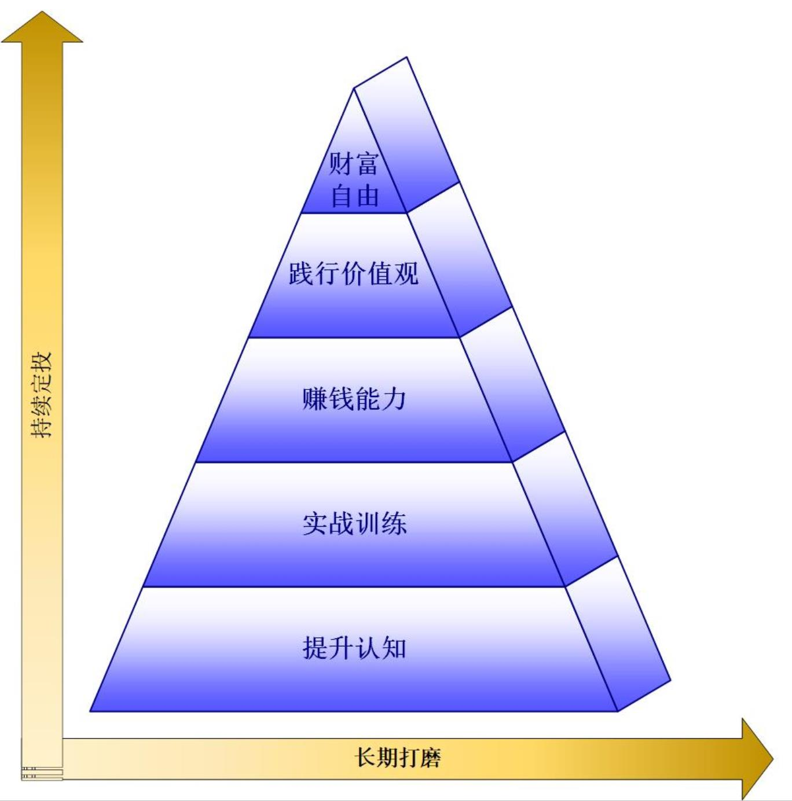
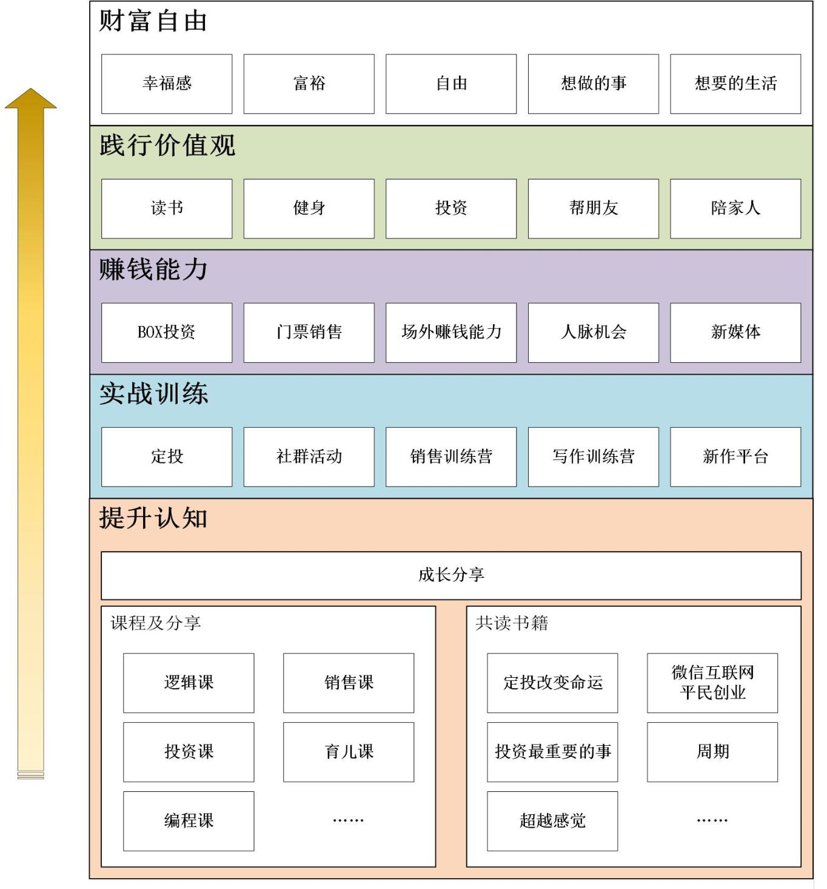
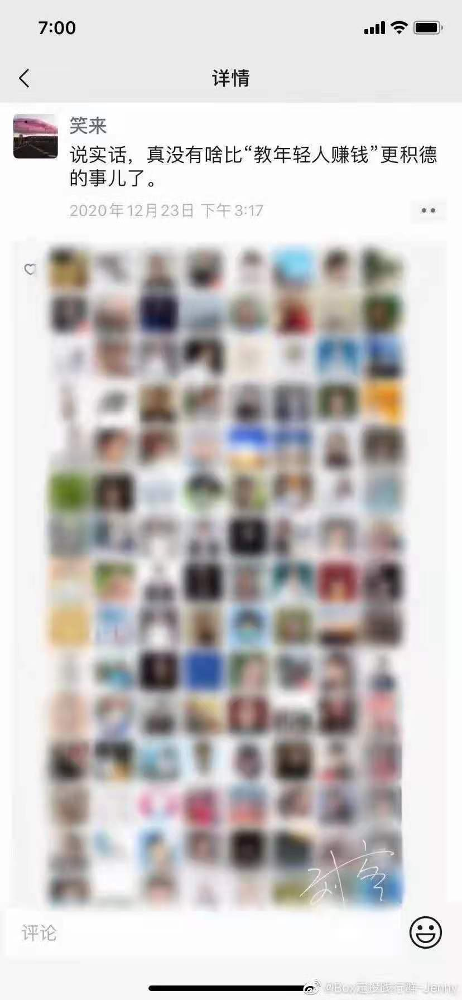

我特别想写一篇介绍 BOX 定投践行群 的文章，随着深入总是会对 BOX 定投践行群 有新的认知，不得不停下来，重新思考
从开始的惊喜，到将践行群理解为投资社群，再到觉得是学习平台，最后发现这里其实是个 完整的扩展性强的 学习、成长、赚钱 于一体的生态系统，普通人获得财富自由的高速列车
最近有朋友过来咨询 BOX 定投践行群，我意识到是时候，从亲历者的角度介绍一下 BOX 定投践行群了
我是谁
首先介绍一下我自己，
我是一个即将进入不惑之年，面临中年危机，身体状况变差的普通人
和大多数人一样，过者朝九晚五的生活，梦想着实现财务自由，过上自己想要的生活
可时间一天天过去，十几年一晃而过，梦想并没有变成现实，随着孩子长大，家庭负担逐渐增加，我依然不知何去何从
很长的一段时间里，我很沮丧，很焦虑，特别是每天早上起来，有种无力感，不知道自己要做什么，要去向何方，感觉自己就像西西弗斯，无论用多大的努力，还是在原地打转
但，我并没有放弃努力和追求，总是在解决困扰自己的问题，在寻找突破点
当我突破了自卑、人际交往障碍，解决了情绪问题之后，再一次遇到了李笑来老师和他创建的 BOX 定投践行群，而因此改变了我的人生，让我找到了奋斗的目标，看到了成功的希望，走在了一条通往财富自由的路上：
- 持续定投 BOX 109期
- 持续晨跑 2 公里 二百多天
- 笑来写作训练营第一期优秀组长
- 销售训练营第一期助教
- 重启了公众号，开始视频号，打造个人品牌
- ……
目前我已经升级为 8 年践行群会员，成为了一名名副其实的资深践谍，与一万多名（截至2021-05-15 18:21 12046名）长期主义者，在笑来老师的带领下，共同成长，走向成功
知道并等于做到
我的故事从 得到 上推荐的一本书开始 —— 《把时间当作朋友》
拿到书后，真是如获至宝，废寝忘食
发现困扰自己的大多数问题竟然在于大脑里的认知和概念，更让我吃惊的是，这些认知和概念，竟然是可以优化和升级的，因为：
每个人的大脑里其实都有一个属于自己的操作系统
当看到笑来老师在得到上开始了专栏《通往财富自由之路》，几乎没有太多犹豫就付费报名了，成为了笑来粉
在接下来的 52 周的过程中，学习了 52 个重要概念，这些概念正是更新操作系统的重要组件
但是，知道和做到之间相距十万八千里
明明道理都懂，却过不好这一生
听的时候心潮澎湃，而做的时候，却无从下手，就好像买了光盘，却发现没有光驱一样
就这样边听边苦恼，而课后的问答题，我几乎没有做过，更别提参与回复解答了
虽然如此，还是做了些实践，比如开启了公众号，实践了时间记账法，研究了比特币，还在火币上购买了一枚比特币
当笑来老师，发起为期一年的成长训练营，和全栈营时，很想加入，但因为两千多快钱的门票犹豫了，虽然知道可能会改变自己，但是还是担心自己无法成功，而找出来的理由竟然是：我不去参加照样能变得很好，因为我已经学习了到了
现在回想这是多么的幼稚和无知呀，可是当时就这么认定了，从此也不再关注笑来老师了
很快，我又回到了之前的状态，买的比特币没多久也卖了
就这样，和一次财富自由的机会擦肩而过，而在很久很久之后才能感受到
究竟错过了什么？
无论你选择什么，时间都是分毫不差的过去，从不偏袒谁
时间一晃就到了 2020 年，这段时间确实有些进步，而且还通过考核成为了 Python 技术 公众号的一名签约作者
有次公司需要推广 TMS（运输管理）产品，结合我积累的写作和运营经验，我打算通过公众号，持续输出相关知识性文章来获客，为此我想进一步提升写作水平，以便提高文章质量
真是天注定，就在这时候，我偶然刷到了笑来老师即将开设笑来写作课的文章，激动不已，可是面对 999元 的门票我还是有些犹豫
可能是我在 Python 技术公众号中锻炼了坚毅，提高了认识，在最后一刻，我终于战胜了自己，用领到的稿费，购买了课程
现在看来，那是多么正确的选择呀，一切都是选择的结果
回来之后，我才逐渐的了解到，这些年我错过了什么：
- 龙门基金 一个以比特币、EOS、Mixin，以及另外三种数字货币组成的数字资产基金，到21年4月关闭时，累计收益两百多倍
- BOX 践行群 于 19 年 7 月成立，帮助4千人多赚了1个亿（20年7月）
- Mixin 网络的数字资产平台出现
- 曾经参加了新大训练营的一个大学同学，已成为 BigONE 的 COO
- ……
你看 仅仅是当初的选择不同，最后的结果竟然相差的这么大
在写作课期间，阅读了《定投改变命运》，虽然我之前也做过定投，但对其中的概念好像从来没注意到，更别说思考这些问题了：
- 长期究竟是多久？
- 定期间隔多久合适？
- 定额多少才合适？
- 定投标的应该用什么样的原则去选择？
而书中给出了明确答案，让我豁然开朗
更重要的是，让我明白了投资只是结果，促使采用正确方式投资的是知识和认知 —— 提高自己的能力
于是我迫不及待地加入了 BOX 定投践行群，搭上了这辆通往财富自由的高速列车
躬身入局
入群之后，不再是隔岸观火
反复听过去一年里，笑来老师的分享（心理按摩），每一个都有收获，感觉从来没离笑来老师这么近过
为了验证定投策略的效果，我用 Python 写了一个模型，并将过程写成了文章：定投改变改变命运？python 帮你解答
从中可以看出，只要采用定投策略，经过足够久的时间，就会有收获，同时验证了：
经过漫长的熊市之后，牛市还没完全展现，定投的复利效果就以显现出来了
我不断地加大投资力度，在过去一年的时间里，收益率一度超过 175%，这是之前完全想象不到的
这里有个小插曲：
20年 5月份（当时还不知道 BOX 定投践行群），我做了次 “投资” —— 购买了小区里的一个车位，想着这是刚需，为了一定对赚钱，至少不会赔钱，而与定投的 BOX 相比，这个“投资” 简直就是浪费，如果当初投资了 BOX，买个两个都绰绰有余，你看还是选择的问题
庐山真面目
而 BOX 定投践行群 远不止投资这么简单，如果只是投资 BOX 的话，完全可以不用入群
BOX 定投践行群 实际上一所践行 教，练，教练 学习理念，教授 家长不会，学校不教，还会被社会反复妖魔化的 赚钱技能的学校
提供优质的不断更新的课程，设置班级为单位的学习组，组织共读、训练营等多种践行活动，打造优质的投资标的 BOX，以及优质的销售标的 —— BOX 定投践行群 门票，构建出一个完整的、扩展性强的 学习、成长、赚钱 于一体的生态系统
从提升认知，到财富自由，让任何人，特别是像我这样普通的人，能通过学习和践行习得赚钱技能，从而实现财富自由
这是践行群的进阶层次图：

从下往上
- 提升认知，建立正确的金钱观，理财观，投资观，逻辑思考能力
- 通过各种训练营的践行，对技能和认知加深印象，内化为自己的东西
- 通过投资，销售，打磨赚钱能力，实实在在地让大家赚到钱
- 践行社群价值观：读书，健身，投资，帮朋友，陪家人，增进自己价值力和幸福度的同时，为赚钱之后的健康幸福的生活做准备
- 最终，获得财富自由，赢得起
就光是知道这个层次结构就已收益匪浅，更何况践行群就是这样一个真实的存在
将这个结构展开，会看到更多的细节：

这就是我在将近一年的时间里，对践行群认识的总结
笑来老师说：
真没有啥比 “教年轻人赚钱” 更积德的事儿了

从《把时间当作朋友》的理念，到《通往财富自由之路》的指导，再到《BOX 定投践行群》的实践，笑来老师一步步将说的变为现实，正如对自己设置的底线：
李笑来只写自己已经验证的道理
今非昔比
经过在社群里的打磨和锻炼，我已经不是之前那个犹豫不决，纠结焦虑，不知所措，身体欠佳，面临中年危机的自己了
-
持续跑步，体重减轻，健康达标
-
持续早起，能量早读，营养早餐，能量满满，精神充沛
-
持续写作，继续坚持 Python 技术的写作，开启自己的公众号
管窥程序 -
持续定投，将每月结业定投入 BOX，作为孩子教育基金
-
持续链接，打破阶层局限，更多的人建立链接，收获友谊，共创未来
-
持续阅读，增长知识，提高认知
-
持续输出，分享读书感悟与解读，传播价值打造个人品牌
-
……
这一切都是定投
你也可以
-
我推荐《BOX 定投践行群》给同样想获得财富自由，但却不知从何下手的你；
-
我推荐《BOX 定投践行群》给想跨越阶层获得链接，但可能找不到合适环境的你
-
我推荐《BOX 定投践行群》给想要学习投资技能，但没有专业知识和实践环境的你
-
我推荐《BOX 定投践行群》给想要改变自己人生，但可能没有目标和方向的你
-
我推荐《BOX 定投践行群》给想要提高销售能力，但找不到优质销售标的的你
-
我推荐《BOX 定投践行群》给有想法有创意，但在生活里处处碰壁没人理解的你
-
我推荐《BOX 定投践行群》给想与一群志同道合的人相互帮助共同成长，但却无比孤独的你
-
……
财富自由，有法可依
总之，我推荐《BOX 定投践行群》给所有想要获得幸福生活实现财富自由的你
因为这里有良好的成长环境，不在让你势单力薄！
因为这里能让你的能力放大，产生更大的价值！
因为这里能让你习得赚钱技能，获得实实在在的收入！
因为这里践行读书，投资，健身，帮朋友，陪家人 的价值观，能让幸福的生活不再遥不可及，而成为每一天的日常
现在扫码二维码，按照提示操作加入，即可拥有这一切
或者参考简明教程加入：
-
下载新生APP: https://www.firesbox.com/app/
-
搜索群号 7000103758
-
输入邀请码 GKZD8I809V
-
支付 2520.73 元或是等额比特币即可
注意：
2520.73 为2021年5月的门票价格，随会员数增加可能会有所上涨
操作有问题或者其他任何问题，可以随时联系我，我的微信号是：snowsunsun
或者扫码二维码添加好友，请注明：咨询践行群
是的，我毫不避讳地大胆真诚地讲 —— 推荐有奖
加入 【BOX 定投践行群】，需要推荐码，使用我的推荐码 GKZD8I809V 我可以获得 55% 扣除个人所得税的销售提成
这个机制就是鼓励大家积极销售，将【BOX 定投践行群】这个超值的产品推荐给更多的人
同时作为优质的销售标的，提高大家的场外赚钱能力：
BOX 定投践行群是让大家赚钱的，但也不能直接送钱吧
而加入 BOX 定投践行群，可立即获得分销资格，一年会员提成比例为 25%，增加一年会员，提高 5%，最高到 55%，即成为资深践谍的提成比例
注意所有获得的提供都会依法扣除个人所得税再发放给个人的
也就是这是获得合法收入的一条途径
为什么要使用我的推荐码呢？
我的理由是：
- 成为你的专属客服，随时解答关于践行群的任何问题
- 作为写作训练营优秀组长，和签约作者，为你提供写作相关问题指导和咨询，帮助你打造写作系统
- 作为销售训练营助教，手把手帮助你跨越销售门槛，突破销售技能
- 具有十年以上 IT 经验，为你提供软件，编程方面的支持与咨询
- 曾帮助多位朋友，解决心理卡点，可为你提供个人成长，儿童教育，心理障碍方面的指导与咨询
- 最重要的是会成为你一辈子的值得信赖的朋友
一切刚刚开始
我们的故事才刚刚开始，期望在与你一起共同创造
感谢笑来老师为像我这样的普通人提供的实现梦想的机会
感谢我的推荐人践行群运营 塘主；写作训练营助教 Susan；践行群班长 苏苏，立宇；销售训练营教练 小暖；还有一路走来，互帮互助的战友们；
感谢践行群的价值观，让我获得健康幸福的生活；
感谢一直努力不愿意放弃的自己，终于没有再次错过这个绝佳的机会；
感谢一直支持我、鼓励我、照顾我、包容我的家人；
我深信，这是我人生的一次正确的选择！持续选择做正确的事，持续成长的我们，就是值得拥有更幸福的生活！
这一切从选择 BOX 定投践行群 开始！
如果觉得文章不错，不使用我的推荐也没关系，那就打个赏吧，支持一下奋斗不息的我吧